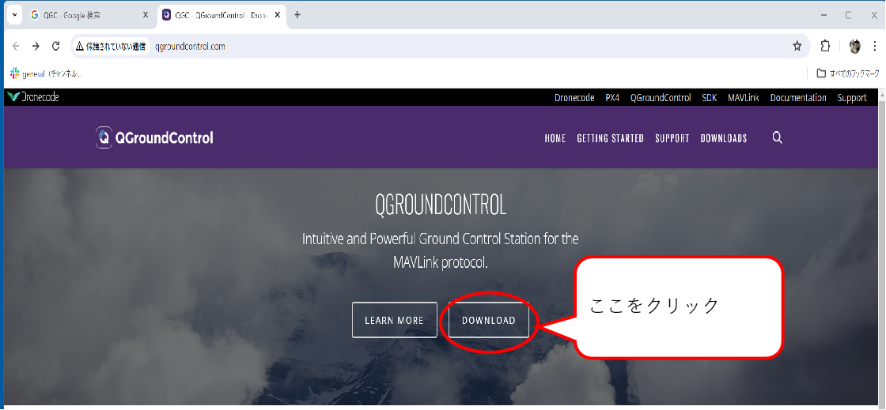
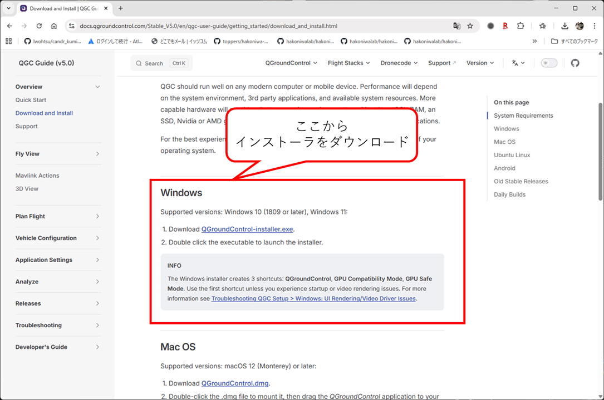
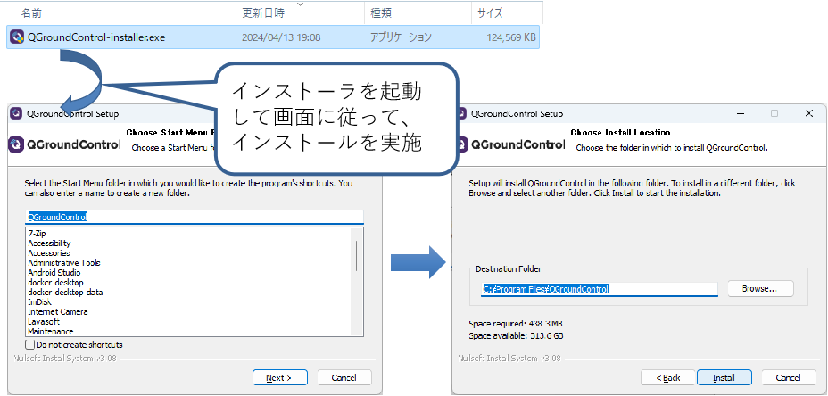

箱庭ドローンシミュレータ 準備編
Graund Control software(QGC編)インストール
目次
用語集・改版履歴
| 略語 | 用語 | 意味 |
|---|---|---|
| No | 日付 | 版数 | 変更種別 | 変更内容 |
|---|---|---|---|---|
| 1 | 2025/09/22 | 0.1 | 新規 | 新規作成 |
1. QGC環境のインストール¶
QGC(QGroundControl)の公式ページにアクセスして、QGC環境を入手します。
公式ページに行くと、DOWNLOADというボタンがあるのでクリックします。

DOWNLOADボタンをクリックすると、各OSごとのインストーラが配布されています。Windows用を入手します。

インストーラをダウンロードできたら、インストーラを起動して、画面に従ってインストールします。
